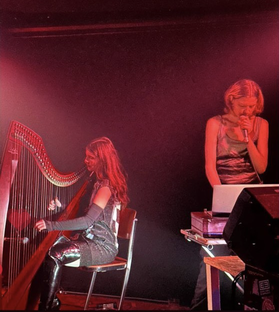
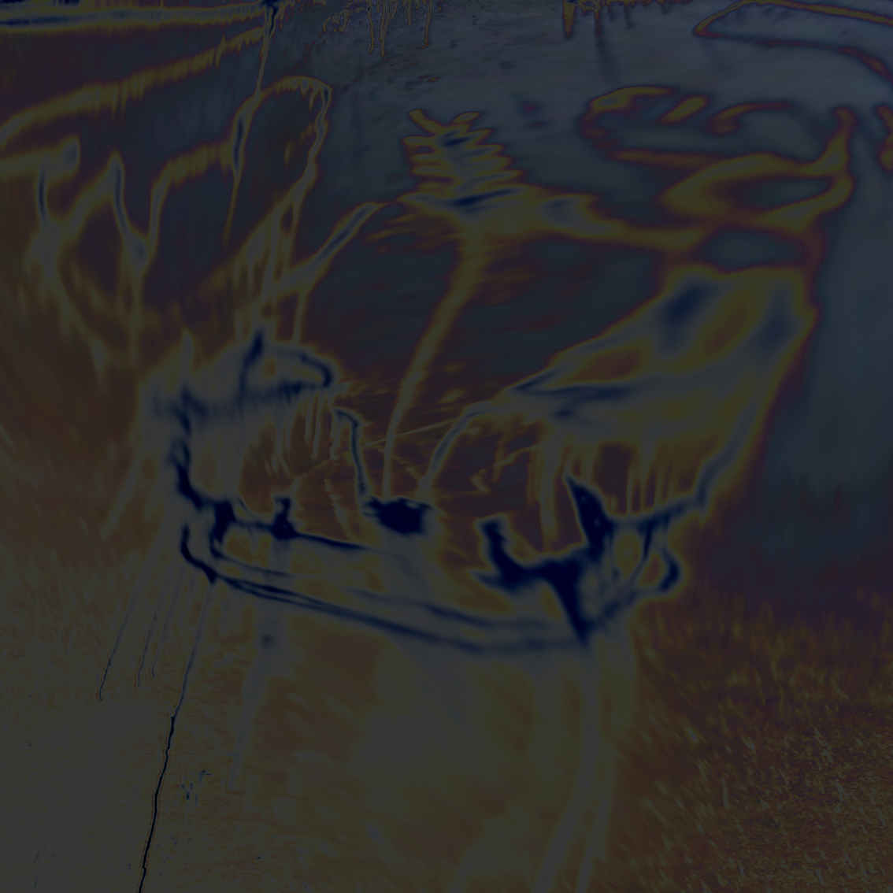
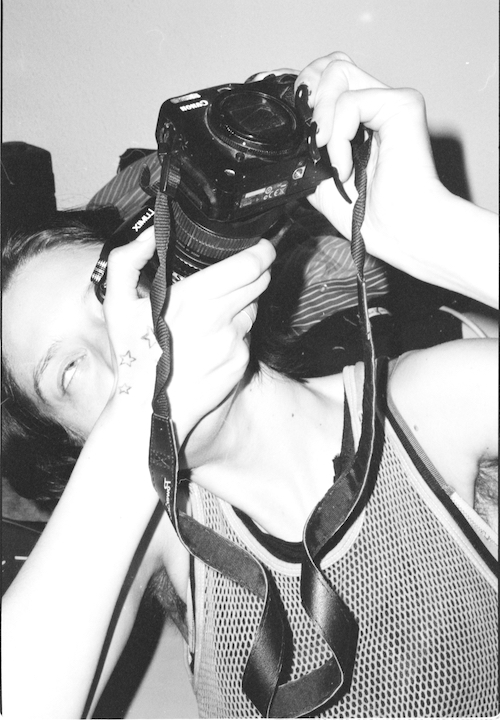
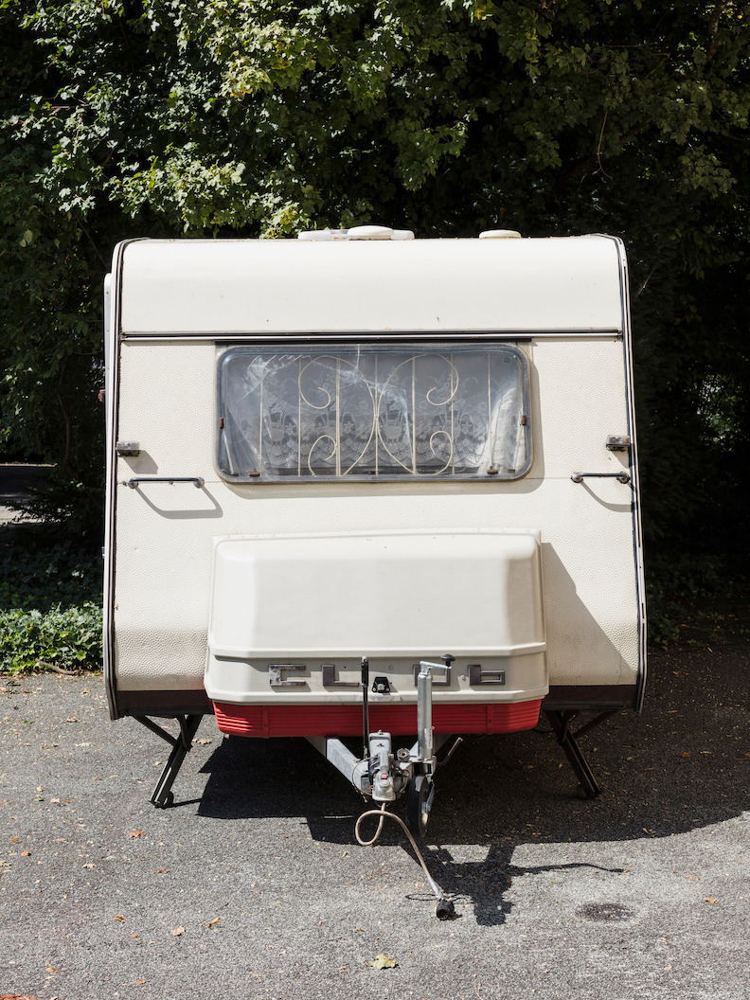
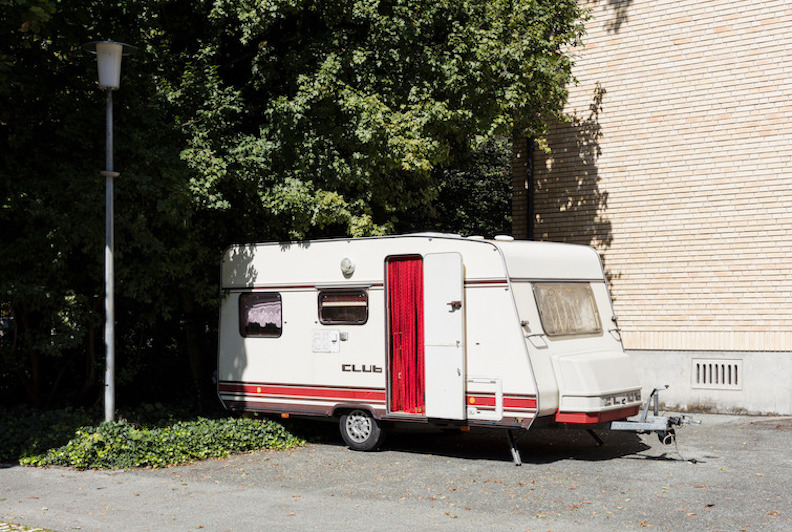
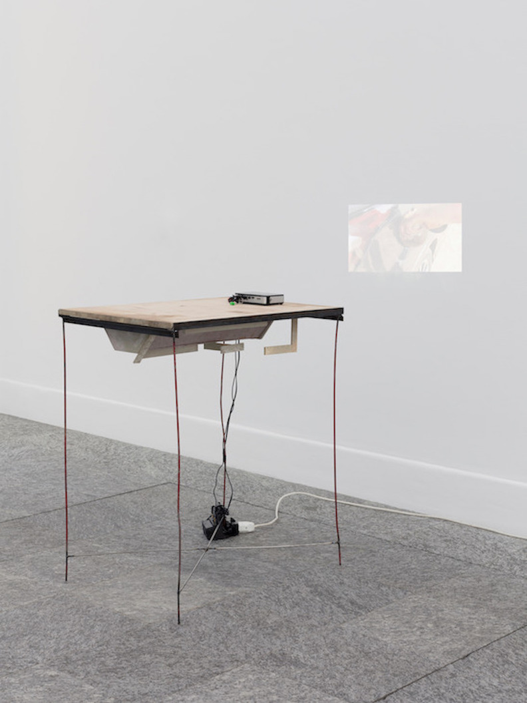
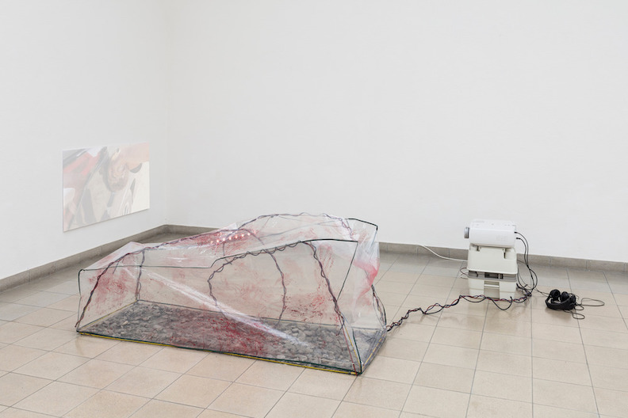
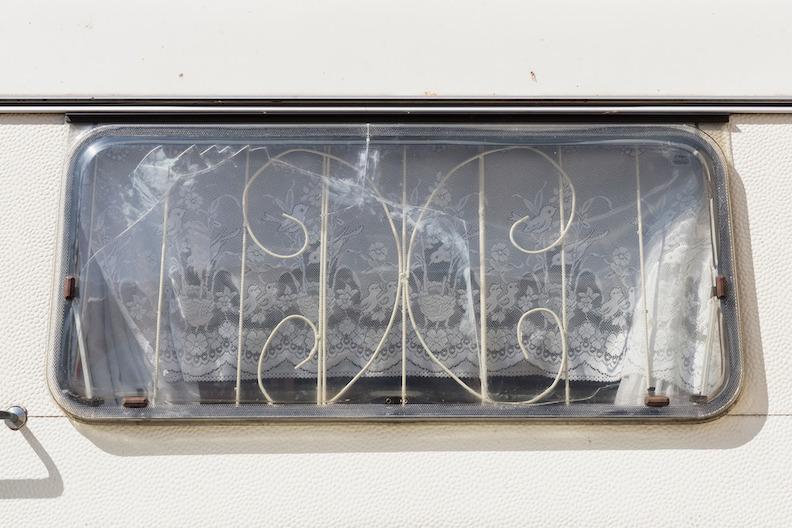
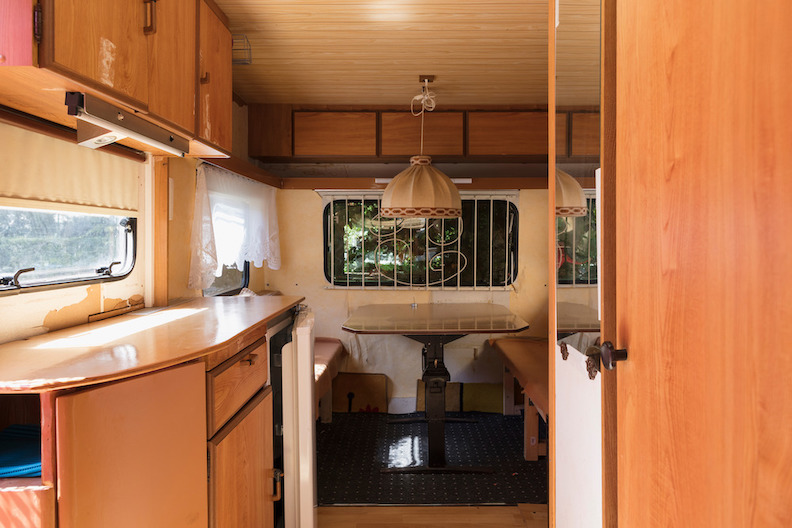

A collaborative work including curation with collective TLC23 (Katie Shannon and Keira Fox) TLC23 at TINA
The installation, curation and live intervention including sound performance with custom made shoes as insturments constructed by Keira Fox, Katie Shannon and Vera Karlsson.
Poetry displayed by Iman Mohammed, music live performance by L and music live performance by Crystabel Riley, at TINA gallery London, 2024
Postproductions at studiengalerie-1357 with The Institute of Scene Experiments 2022-2023
how leisure always imitates labor
Kunstverein München, 2023
Performance and installation with music score conceived by Jan Kunkel, Vera Karlsson, and Alie O.
FET MIASMA MIS, a TLC.23 event and exhibition by Kiera Fox and Katie Shannon, at Le Bourgeois, 3236rls, 2023

During 2023 I produced music with Livia Rasku, harp, voice and beats, 'Stringbabe', performed at Garcia NRG a music and performance event organised by me
at West Germany in Berlin. We also played at Loop Hole in Berlin, and released an demo album on cd for Gaza fundraiser.
Keywork at bbberlin , 2022

TLC.23 event with Kiera Fox and Katie Shannon, Fet Miasma Miss at Delta Mityba Vilnius, 2022
Live recording from Between: The Secret of Futility

Dana Rosa ep, Vera Karlsson and Finlay Clark, 2021
Fermata at Leech
Collaboration between Vera Karlsson and Iman Mohammed , 2021
Intervention with Julija Zaharijevic for The Ladies Club, 2021

Group Show at 3236rls, photography print, 2021
video for Lolina live in Kunsthaus Glarus Osmosis, 2019






Nancy Halt in Sie sagen wo Rauch ist, ist auch Feuer
Nancy Halt Trailer, 2017


Nancy Halt, 2017-2020, was a collective work by Vera Karlsson, Julia Moritz and Bob Vanderwal.
Field recordings, video, caravan, mixed media installation, fotoalbums and more
SECRETS, 2018
Globe II, 2018


Fire Is Space Piper Keys , 2016
Cola at Forde, 2016
Untitled (Knobs) Le Bourgeois, 2016
Hotel Bloom Invite, 2015
Hotel Bloom at 3236rls, 2015

Hotel Bloom Poster
Catfish Guests #2:Benedict Drew - Escape Routes, 2014


"Thank you for the love aka Who Need Gitars Anyway?" sculpture and install as three channel video, 2014
"Thank you for the love aka Who Need Gitars Anyway?", 2014

Found objects, 2014
Fuel 2013
Me either 2012